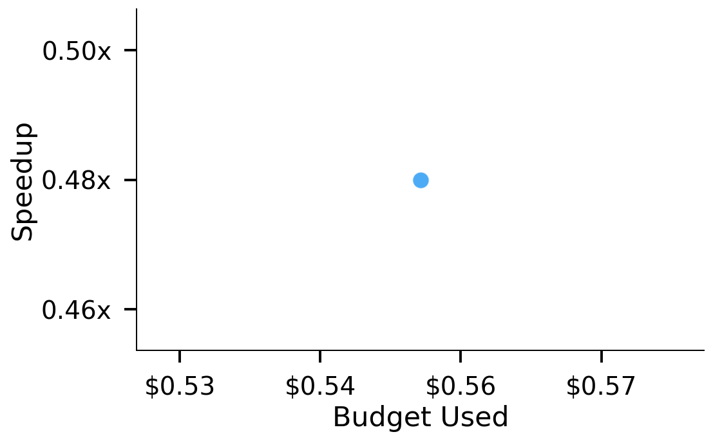
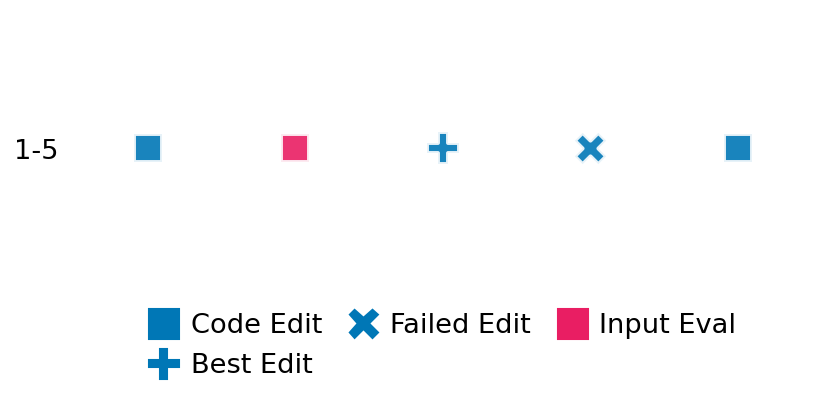

SETTING:
You're an autonomous programmer tasked with solving a specific problem. You are to use the commands defined below to accomplish this task. Every message you send incurs a cost—you will be informed of your usage and remaining budget by the system.
You will be evaluated based on the best-performing piece of code you produce, even if the final code doesn't work or compile (as long as it worked at some point and achieved a score, you will be eligible).
Apart from the default Python packages, you have access to the following additional packages:
- cryptography
- cvxpy
- cython
- dace
- dask
- diffrax
- ecos
- faiss-cpu
- hdbscan
- highspy
- jax
- networkx
- numba
- numpy
- ortools
- pandas
- pot
- psutil
- pulp
- pyomo
- python-sat
- pythran
- scikit-learn
- scipy
- sympy
- torch
YOUR TASK:
Your objective is to define a class named `Solver` in `solver.py` with a method:
```
class Solver:
def solve(self, problem, **kwargs) -> Any:
"""Your implementation goes here."""
...
```
IMPORTANT: Compilation time of your init function will not count towards your function's runtime.
This `solve` function will be the entrypoint called by the evaluation harness. Strive to align your class and method implementation as closely as possible with the desired performance criteria.
For each instance, your function can run for at most 10x the reference runtime for that instance. Strive to have your implementation run as fast as possible, while returning the same output as the reference function (for the same given input). Be creative and optimize your approach!
Your messages should include a short thought about what you should do, followed by a _SINGLE_ command. The command must be enclosed within ``` and ```, like so:
<Reasoning behind executing the command>
```
<command>
```
IMPORTANT: Each set of triple backticks (```) must always be on their own line, without any other words or anything else on that line.
Here are the commands available to you. Ensure you include one and only one of the following commands in each of your responses:
- `edit`: Replace a range of lines with new content in a file. This is how you can create files: if the file does not exist, it will be created. Here is an example:
```
edit
file: <file_name>
lines: <start_line>-<end_line>
---
<new_content>
---
```
The command will:
1. Delete the lines from <start_line> to <end_line> (inclusive)
2. Insert <new_content> starting at <start_line>
3. If both <start_line> and <end_line> are 0, <new_content> will be prepended to the file
Example:
edit
file: solver.py
lines: 5-7
---
def improved_function():
print("Optimized solution")
---
- `ls`: List all files in the current working directory.
- `view_file <file_name> [start_line]`: Display 100 lines of `<file_name>` starting from `start_line` (defaults to line 1).
- `revert`: Revert the code to the best-performing version thus far.
- `reference <string>`: Query the reference solver with a problem and receive its solution. If the problem's input is a list, this command would look like:
```
reference [1,2,3,4]
```
- `eval_input <string>`: Run your current solver implementation on the given input. This is the only command that shows stdout from your solver along with both solutions. Example:
```
eval_input [1,2,3,4]
```
- `eval`: Run evaluation on the current solution and report the results.
- `delete`: Delete a range of lines from a file using the format:
```
delete
file: <file_name>
lines: <start_line>-<end_line>
The command will delete the lines from <start_line> to <end_line> (inclusive)
Example:
delete
file: solver.py
lines: 5-10
```
- `profile <filename.py> <input>`: Profile your currently loaded solve method's performance on a given input. Shows the 25 most time-consuming lines. Requires specifying a python file (e.g., `solver.py`) for validation, though profiling runs on the current in-memory code.
Example:
```
profile solver.py [1, 2, 3]
```
- `profile_lines <filename.py> <line_number1, line_number2, ...> <input>`: Profiles the chosen lines of the currently loaded code on the given input. Requires specifying a python file for validation.
Example:
```
profile_lines solver.py 1,2,3 [1, 2, 3]
```
**TIPS:**
After each edit, a linter will automatically run to ensure code quality. If there are critical linter errors, your changes will not be applied, and you will receive the linter's error message. Typically, linter errors arise from issues like improper indentation—ensure your edits maintain proper code formatting.
**Cython Compilation:** Edits creating or modifying Cython (`.pyx`) files will automatically trigger a compilation attempt (requires a `setup.py`). You will be notified if compilation succeeds or fails. If it fails, the edit to the `.pyx` file will be automatically reverted.
If the code runs successfully without errors, the in-memory 'last known good code' will be updated to the new version. Following successful edits, you will receive a summary of your `solve` function's performance compared to the reference.
If you get stuck, try reverting your code and restarting your train of thought.
Do not put an if __name__ == "__main__": block in your code, as it will not be ran (only the solve function will).
Keep trying to better your code until you run out of money. Do not stop beforehand!
**GOALS:**
Your primary objective is to optimize the `solve` function to run as as fast as possible, while returning the optimal solution.
You will receive better scores the quicker your solution runs, and you will be penalized for exceeding the time limit or returning non-optimal solutions.
Below you find the description of the task you will have to solve. Read it carefully and understand what the problem is and what your solver should do.
**TASK DESCRIPTION:**
Vertex Cover
Given an undirected graph G, find the smallest set of vertices such that every edge has at least one endpoint in the set.
Input: A 2d array (2 dim list) A with value 0/1 representing the adjacency matrix
A[i][j] = 0 : there is no edge between i, j
A[i][j] = 1 : there is an edge between i, j
The input should be symmetric
Example input: [
[0,1,0,1],
[1,0,1,0],
[0,1,0,1],
[1,0,1,0]
]
Output: A list showing the index of the selected nodes
Example output: [0, 2]
Category: discrete_optimization
Below is the reference implementation. Your function should run much quicker.
import random
from ortools.sat.python import cp_model
| 01: def solve(self, problem: list[list[int]]) -> list[int]:
| 02: """
| 03: Solves the minimum vertex cover problem using the CP‑SAT solver.
| 04:
| 05: :param problem: A 2D adjacency matrix representing the graph.
| 06: :return: A list of vertex indices forming the minimum vertex cover.
| 07:
| 08:
| 09: NOTE: Your solution must pass validation by:
| 10: 1. Returning correctly formatted output
| 11: 2. Having no NaN or infinity values
| 12: 3. Matching expected results within numerical tolerance
| 13: """
| 14: n = len(problem)
| 15: model = cp_model.CpModel()
| 16:
| 17: # Create a Boolean decision variable for each vertex: 1 if the vertex is in the cover.
| 18: nodes = [model.NewBoolVar(f"x_{i}") for i in range(n)]
| 19:
| 20: # For each edge, ensure that at least one of the endpoints is selected.
| 21: for i in range(n):
| 22: for j in range(i + 1, n):
| 23: if problem[i][j] == 1:
| 24: model.Add(nodes[i] + nodes[j] >= 1)
| 25:
| 26: # Objective: minimize the total number of selected vertices.
| 27: model.Minimize(sum(nodes))
| 28:
| 29: solver = cp_model.CpSolver()
| 30: status = solver.Solve(model)
| 31:
| 32: if status == cp_model.OPTIMAL:
| 33: # Extract the vertices that are in the cover (i.e. with value 1).
| 34: selected = [i for i in range(n) if solver.Value(nodes[i]) == 1]
| 35: return selected
| 36: else:
| 37: # Return the trivial cover including all vertices if no solution is found.
| 38: return list(range(n))
| 39:
This function will be used to check if your solution is valid for a given problem. If it returns False, it means the solution is invalid:
import random
from ortools.sat.python import cp_model
| 01: def is_solution( problem: list[list[int]], solution: list[int]) -> bool:
| 02: """
| 03: Verifies that the candidate solution is a vertex cover and is optimal.
| 04:
| 05: :param problem: The adjacency matrix.
| 06: :param solution: A list of vertex indices representing the candidate cover.
| 07: :return: True if the solution covers all edges and its size matches the optimal solution; otherwise, False.
| 08: """
| 09: try:
| 10: n = len(problem)
| 11: # Check that every edge is covered by at least one vertex in the solution.
| 12: for i in range(n):
| 13: for j in range(i + 1, n):
| 14: if problem[i][j] == 1:
| 15: if (i not in solution) and (j not in solution):
| 16: return False
| 17: # Verify optimality by comparing with the optimal cover.
| 18: optimal = solve(problem)
| 19: return len(optimal) == len(solution)
| 20: except Exception as e:
| 21: logging.error(f"Error when verifying solution: {e}")
| 22: return False
| 23:
 AlgoTuner Trajectory
AlgoTuner Trajectory
AlgoTune Task:
vertex_cover_cpsat
Model:
Claude Opus 4
Speedup
0.447x
Total Budget
$1.00
Initial System Prompt
AlgoTune Task Description
Vertex Cover
Given an undirected graph G, find the smallest set of vertices such that every edge has at least one endpoint in the set.
Input: A 2d array (2 dim list) A with value 0/1 representing the adjacency matrix
A[i][j] = 0 : there is no edge between i, j
A[i][j] = 1 : there is an edge between i, j
The input should be symmetric
Example input: [
[0,1,0,1],
[1,0,1,0],
[0,1,0,1],
[1,0,1,0]
]
Output: A list showing the index of the selected nodes
Example output: [0, 2]
Category: discrete_optimization
Reference Implementation
import random
from ortools.sat.python import cp_model
def solve(self, problem: list[list[int]]) -> list[int]:
"""
Solves the minimum vertex cover problem using the CP‑SAT solver.
:param problem: A 2D adjacency matrix representing the graph.
:return: A list of vertex indices forming the minimum vertex cover.
NOTE: Your solution must pass validation by:
1. Returning correctly formatted output
2. Having no NaN or infinity values
3. Matching expected results within numerical tolerance
"""
n = len(problem)
model = cp_model.CpModel()
# Create a Boolean decision variable for each vertex: 1 if the vertex is in the cover.
nodes = [model.NewBoolVar(f"x_{i}") for i in range(n)]
# For each edge, ensure that at least one of the endpoints is selected.
for i in range(n):
for j in range(i + 1, n):
if problem[i][j] == 1:
model.Add(nodes[i] + nodes[j] >= 1)
# Objective: minimize the total number of selected vertices.
model.Minimize(sum(nodes))
solver = cp_model.CpSolver()
status = solver.Solve(model)
if status == cp_model.OPTIMAL:
# Extract the vertices that are in the cover (i.e. with value 1).
selected = [i for i in range(n) if solver.Value(nodes[i]) == 1]
return selected
else:
# Return the trivial cover including all vertices if no solution is found.
return list(range(n))Best AlgoTuner-Generated Code
solver.py
import numpy as np
from typing import Any, List, Set, Tuple
from ortools.sat.python import cp_model
class Solver:
def solve(self, problem: List[List[int]], **kwargs) -> Any:
"""
Solves the minimum vertex cover problem.
:param problem: A 2D adjacency matrix representing the graph.
:return: A list of vertex indices forming the minimum vertex cover.
"""
n = len(problem)
# Get all edges efficiently
edges = []
for i in range(n):
for j in range(i + 1, n):
if problem[i][j] == 1:
edges.append((i, j))
# If no edges, return empty set
if not edges:
return []
# For small graphs, use optimized brute force
if n <= 20:
return self._optimized_brute_force(n, edges)
# For larger graphs, use OR-Tools with optimizations
return self._ortools_optimized(problem, n, edges)
def _optimized_brute_force(self, n: int, edges: List[Tuple[int, int]]) -> List[int]:
"""Optimized brute force with early termination."""
# Create adjacency lists for faster neighbor lookup
adj = [set() for _ in range(n)]
for u, v in edges:
adj[u].add(v)
adj[v].add(u)
# Calculate lower bound using maximal matching
lower_bound = self._matching_lower_bound(n, edges, adj)
best_size = n + 1
best_cover = None
# Try subsets starting from lower bound size
for size in range(lower_bound, n + 1):
found = self._find_cover_of_size(n, edges, adj, size)
if found is not None:
return sorted(found)
return list(range(n))
def _find_cover_of_size(self, n: int, edges: List[Tuple[int, int]],
adj: List[Set[int]], target_size: int) -> List[int]:
"""Find a vertex cover of specific size using backtracking."""
cover = []
uncovered_edges = set(edges)
def backtrack(start: int, remaining: int) -> bool:
if not uncovered_edges:
return True
if remaining == 0:
return False
# Pruning: if we need more vertices than remaining
min_needed = self._min_vertices_needed(uncovered_edges)
if min_needed > remaining:
return False
# Choose vertex that covers most uncovered edges
best_vertex = -1
max_coverage = 0
for v in range(start, n):
if v not in cover:
coverage = sum(1 for u in adj[v] if (min(u, v), max(u, v)) in uncovered_edges or
(min(v, u), max(v, u)) in uncovered_edges)
if coverage > max_coverage:
max_coverage = coverage
best_vertex = v
if best_vertex == -1:
return False
# Try adding this vertex
cover.append(best_vertex)
removed_edges = []
for u in adj[best_vertex]:
edge = (min(u, best_vertex), max(u, best_vertex))
if edge in uncovered_edges:
uncovered_edges.remove(edge)
removed_edges.append(edge)
if backtrack(best_vertex + 1, remaining - 1):
return True
# Backtrack
cover.pop()
for edge in removed_edges:
uncovered_edges.add(edge)
# Try without this vertex
return backtrack(best_vertex + 1, remaining)
if backtrack(0, target_size):
return cover[:]
return None
def _min_vertices_needed(self, edges: Set[Tuple[int, int]]) -> int:
"""Lower bound: minimum vertices needed to cover remaining edges."""
if not edges:
return 0
# Greedy matching for lower bound
covered_vertices = set()
count = 0
for u, v in edges:
if u not in covered_vertices and v not in covered_vertices:
covered_vertices.add(u)
covered_vertices.add(v)
count += 1
return count
def _matching_lower_bound(self, n: int, edges: List[Tuple[int, int]],
adj: List[Set[int]]) -> int:
"""Calculate lower bound using maximal matching."""
matched = set()
count = 0
for u, v in edges:
if u not in matched and v not in matched:
matched.add(u)
matched.add(v)
count += 1
return count
def _ortools_optimized(self, problem: List[List[int]], n: int,
edges: List[Tuple[int, int]]) -> List[int]:
"""Optimized OR-Tools implementation."""
model = cp_model.CpModel()
# Create Boolean variables
nodes = [model.NewBoolVar(f"x_{i}") for i in range(n)]
# Add constraints for edges
for u, v in edges:
model.Add(nodes[u] + nodes[v] >= 1)
# Objective
model.Minimize(sum(nodes))
# Solver with optimizations
solver = cp_model.CpSolver()
solver.parameters.num_search_workers = 1 # Single thread is often faster for small problems
solver.parameters.linearization_level = 0 # Disable linearization for pure Boolean problems
status = solver.Solve(model)
if status == cp_model.OPTIMAL:
return [i for i in range(n) if solver.Value(nodes[i]) == 1]
return list(range(n))Speedup vs Budget Plot
Speedup vs Budget

Action Sequence
